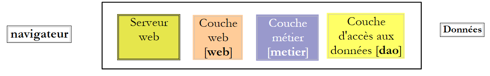
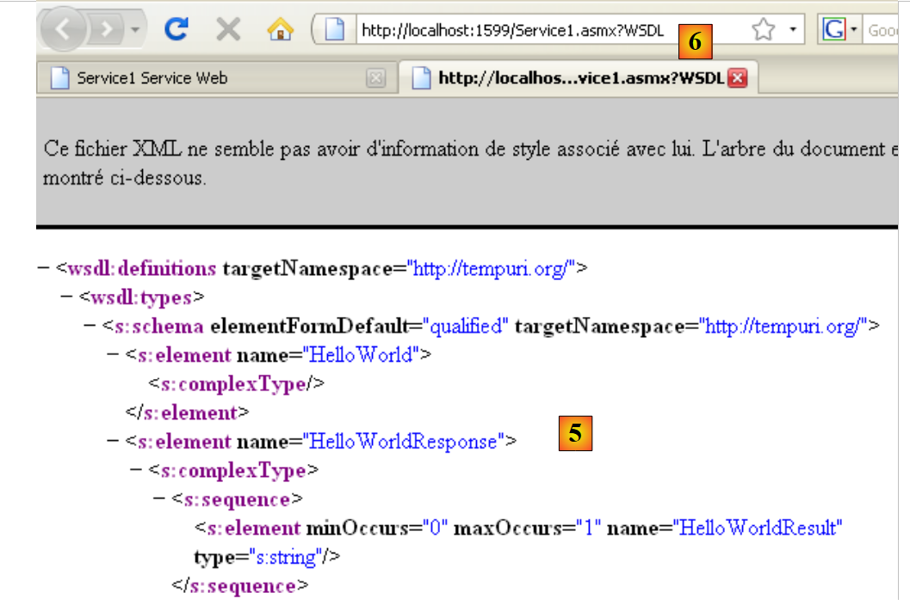
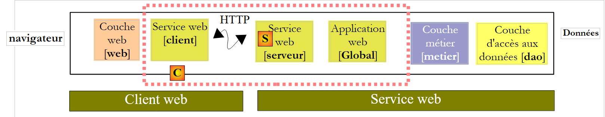
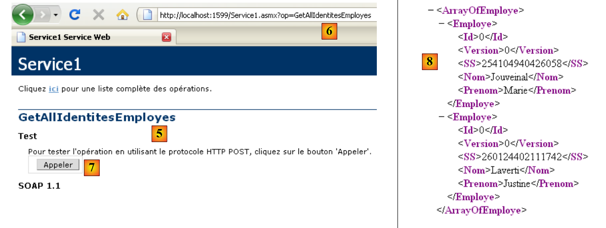

9. L'application [SimuPaie] – version 5 – ASP.NET / service web
Lectures conseillées : référence [2], Introduction à C# 2008, chapitre 10 "Services Web"
9.1. La nouvelle architecture de l'application
L'architecture en couches de l'application Pam est actuellement la suivante :
 |
Nous allons la faire évoluer comme suit :
 |
Alors que dans l'architecture précédente, les couches [web], [metier], [dao] s'exécutaient dans une même machine virtuelle .NET, dans la nouvelle architecture, la couche [web] s'exécutera dans une autre machine virtuelle que les couches [metier] et [dao]. Ce sera le cas notamment si la couche [web] est sur une machine M1 et les couches [metier] et [dao] sur une machine M2. On a ici une architecture client / serveur :
- le serveur est constitué des couches [metier] et [dao]. Parce que c'est un service web, il a besoin du serveur web n° 2 pour s'exécuter.
- le client est constitué de la couche [web]. Pour s'exécuter, il a besoin du serveur web n° 1.
- le client et le serveur communiquent par le réseau Tcp / Ip avec le protocole HTTP / SOAP. Pour cela, deux nouvelles couches doivent être ajoutées à l'architecture :
- la couche [S] qui sera un service web. Le service web reçoit les requêtes des clients distants et utilise les couches [metier] et [dao] pour les satisfaire. Il y a de nombreuses façons de construire un service Tcp / Ip. L'avantage du service web est double :
- il utilise le protocole HTTP que laissent passer les pare-feux des entreprises et administrations
- il utilise un sous-protocole HTTP / SOAP standard, implémenté par de nombreuses plate-formes de développement : .Net, Java, Php, Flex, ... Ainsi un service web peut être "consommé" (c'est le terme usuel) par des clients .Net, Java, Php, Flex, ...
- la couche [C] qui sera le client du service web distant. Elle aura pour rôle de communiquer avec le service web [S].
- la couche [S] qui sera un service web. Le service web reçoit les requêtes des clients distants et utilise les couches [metier] et [dao] pour les satisfaire. Il y a de nombreuses façons de construire un service Tcp / Ip. L'avantage du service web est double :
Cette nouvelle architecture peut être dérivée des précédentes sans trop d'efforts :
- les couches [metier] et [dao] restent inchangées
- la couche [web] évolue légèrement, essentiellement pour référencer des entités telles Employe, FeuilleSalaire qui sont devenues des entités de la couche client [C]. Ces entités sont analogues à celles des couches [metier] ou [dao] mais elles appartiennent à des espace de noms différents.
- la couche serveur [S] est une classe qui implémente l'interface IPamMetier de la couche [metier]. Cette implémentation se contente de faire appel aux méthodes correspondantes de la couche [metier]. Les méthodes implémentées par la couche serveur [S] vont être "exposées" aux clients distants qui vont pouvoir les appeler.
- la couche client [C] sera générée par Visual Studio.
Les principes de la nouvelle architecture sont les suivants :
- la couche [web] continue à communiquer avec la couche [metier] comme si celle-ci était locale. Pour cela, la couche client [C] implémente l'interface IPamMetier de la couche [metier] réelle et se présente à la couche [web] comme une couche [metier] locale. En-dehors du problème des espaces de noms évoqué précédemment, la couche [web] ne change pas. C'est l'avantage d'avoir travaillé en couches. Si on avait construit une application mono-couche, il faudrait la remanier très profondément.
- la couche client [C] transmet, de façon transparente pour la couche [web], les requêtes de celle-ci au service web distant [S]. Elle prend en charge tout l'aspect "communication réseau". Elle reçoit une réponse du service web distant qu'elle met en forme pour la rendre à la couche [web] sous la forme que celle-ci attend.
- côté serveur, le service web [S] reçoit des commandes de ses clients distants. Il les met en forme afin d'appeler les méthodes de l'interface IPamMetier de la couche [metier]. Lorsqu'il a reçu la réponse de la couche [metier], il met en forme celle-ci pour la transmettre via le réseau au client [C]. Les couches [metier] et [dao] n'ont pas à être modifiées.
9.2. Le projet Visual Web Developer du service web
Nous construisons un nouveau projet avec Visual Web Developer :
 |
- en [1], nous choisissons un projet web en C#
- en [2], nous choisissons "Application de service Web ASP.NET"
- en [3], nous donnons un nom au projet web
- en [4], nous indiquons un emplacement pour ce projet
 |
- en [1] le projet généré. C'est un projet web classique aux détails suivants près :
- on a indiqué que le projet était de type "service web". Un service web n'envoie pas des pages web HTML à ses clients mais des données au format XML. Aussi la page [Default.aspx] habituellement générée ne l'a pas été.
- en [2], un fichier [Service1.asmx] a été généré avec le contenu suivant :
<%@ WebService Language="C#" CodeBehind="Service1.asmx.cs" Class="pam_v5_webservice.Service1" %>
- (suite)
- - la balise WebService indique que [Service.asmx] est un service web
- - l'attribut CodeBehind indique l'emplacement du code source de ce service web
- - l'attribut Class indique le nom de la classe implémentant le service web dans le code source
Le code source [Service.asmx.cs] du service web généré par défaut est le suivant :
using System.Web.Services;
namespace pam_v5_webservice
{
/// <summary>
/// Description résumée de Service1
/// </summary>
[WebService(Namespace = "http://tempuri.org/")]
[WebServiceBinding(ConformsTo = WsiProfiles.BasicProfile1_1)]
[System.ComponentModel.ToolboxItem(false)]
// Pour autoriser l'appel de ce service Web depuis un script à l'aide d'ASP.NET AJAX, supprimez les marques de commentaire de la ligne suivante.
// [System.Web.Script.Services.ScriptService]
public class Service1 : System.Web.Services.WebService
{
[WebMethod]
public string HelloWorld()
{
return "Hello World";
}
}
}
- ligne 8 : l'annotation WebService qui fait que la classe Service1 de la ligne 13 va être exposée comme un service web. Un service web appartient à un espace de noms afin d'éviter que deux services web dans le monde portent le même nom. Nous serons amenés à changer cet espace de noms ultérieurement.
- ligne 13 : la classe Service1 dérive de la classe WebService du framework .NET.
- ligne 16 : l'annotation WebMethod fait que la méthode ainsi annotée va être exposée aux clients distants qui pourront ainsi l'appeler.
- lignes 17-20 : la méthode HelloWorld est une méthode de démonstration. Nous la supprimerons plus tard. Elle nous permet de faire les premiers tests et de découvrir les outils de Visual Studio ainsi que certains éléments à connaître à propos des services web.
 |
- en [1], nous exécutons le service web [Service.asmx]
 |
- VS Web Developer a lancé son serveur web intégré et le fait écouter sur un port aléatoire, ici 1599. L'Url [2] a été ensuite demandée au serveur web. C'est celle d'une page de test du service web.
- en [3], un lien qui permet de visualiser le fichier de description du service web. Ce fichier appelé fichier WSDL (WebService Description Language) à cause de son suffixe (.wsdl) est un fichier XML décrivant les méthodes exposées par le service web. C'est à partir de ce fichier WSDL que les clients peuvent connaître :
- l'espace de noms du service web
- la liste des méthodes exposées par le service web
- les paramètres attendus par chacune d'elles
- la réponse renvoyée par chacune d'elles
- en [4], l'unique méthode exposée par le service web.
 |
- en [5], le contenu du fichier WSDL obtenu via le lien [3]. On notera l'URL [6]. Sa connaissance est nécessaire aux clients du service web.
 |
- en [7], la page obtenue en suivant le lien [4] permet d'appeler la méthode [HelloWorld] du service web
- en [8], le résultat obtenu : une réponse XML. On notera l'URL [9] de la méthode.
L'étude des pages précédentes permet de comprendre comment est appelée une méthode d'un service web et quel type de réponse elle renvoie. Cela permet d'écrire des clients HTTP capables de dialoguer avec le service web. La plupart des IDE actuels permet la génération automatique de ce client HTTP évitant ainsi au développeur de l'écrire. C'est le cas notamment de Visual Studio Express.
Avant de continuer dans ce projet, nous allons changer l'espace de noms utilisé par défaut lors de la génération des classes :
 |
Lorsque nous sélectionnons les propriétés du projet (clic droit sur projet / Propriétés), nous avons en [1] le nom de l'assembly du projet et en [2] son espace de noms par défaut.
Ceci fait,
- dans [Service1.asmx.cs], nous changeons l'espace de noms de la classe :
using System.Web.Services;
namespace pam_v5
{
...
public class Service1 : System.Web.Services.WebService
{
...
}
}
- dans [Service.asmx], nous changeons également l'espace de noms utilisé pour la classe [Service1] (clic droit / afficher le balisage) :
<%@ WebService Language="C#" CodeBehind="Service1.asmx.cs" Class="pam_v5.Service1" %>
Revenons à l'architecture de notre application :
 |
- la couche [S] est le service web. Elle se contente d'exposer les méthodes de la couche [metier] à des clients distants. C'est cette couche que nous sommes en train de construire.
- la couche [C] est le client HTTP du service web. C'est cette couche que les IDE savent générer automatiquement.
- la couche [web] voit la couche [C] comme une couche [metier] locale si on fait en sorte que la couche [C] implémente l'interface de la couche [metier] distante.
Nous voyons ci-dessous que notre service web va :
- exposer les méthodes de la couche [metier]
- dialoguer avec cette dernière qui elle-même va dialoguer avec la couche [dao].
Le projet doit donc utiliser les DLL des couches [metier] et [dao]. Il évolue de la façon suivante :
 |
- en [1], on ajoute des références au projet
- en [2], on sélectionne les DLL habituelles du dossier [lib]. On prendra soin qu'elles aient toutes leur propriété "Copie locale" à True. Les DLL sélectionnées sont celles qui implémentent les couches [metier] et [dao] avec un support NHibernate.
Une application web de type "service Web ASP.NET" peut avoir une classe d'application globale "Global.asax" comme une application "site Web ASP.NET" classique. Nous avons vu l'intérêt d'une telle classe :
- elle est instanciée au démarrage de l'application et reste en mémoire
- elle peut ainsi mémoriser des données partagées par tous les clients et qui sont en lecture seule. Dans notre application elle mémorisera comme dans les précédentes, la liste simplifiée des employés. Cela évitera d'aller chercher cette liste dans la base de données lorsqu'un client la demandera.
 |
- en [1], cliquer droit sur le projet
- en [2], choisir l'option [Ajouter un nouvel élément]
- en [3], choisir [Classe d'application globale]
- en [4], le fichier [Global.asax] a été ajouté au projet
Le contenu du fichier [Global.asax] est le suivant :
<%@ Application Codebehind="Global.asax.cs" Inherits="pam_v5.Global" Language="C#" %>
Le contenu du fichier [Global.asax.cs] est le suivant :
using System;
namespace pam_v5
{
public class Global : System.Web.HttpApplication
{
protected void Application_Start(object sender, EventArgs e)
{
}
...
}
}
Que devons-nous faire dans la méthode Application_Start ? Exactement la même chose que dans les applications web précédentes. Revenons à l'architecture de l'application et positionnons-y la classe [Global] :
 |
Dans le schéma ci-dessus,
- la classe [Global] est instanciée lorsque le service web est démarré. Elle reste en mémoire tant que le service web est actif.
- la classe [Global] instancie les couches [metier] et [dao] dans sa méthode [Application_Start]
- pour améliorer les performances, la classe [Global] met la liste simplifiée des employés dans un champ interne. Elle délivrera la liste des employés à partir de ce champ.
- le service web est lui instancié à chaque requête d'un client. Il disparaît après avoir servi celle-ci. Il ne s'adressera pas directement à la couche [metier] mais à la classe [Global]. Celle-ci implémentera l'interface de la couche [metier].
La classe [Global] est analogue à celle déjà construite pour les applications précédentes :
using System;
using Pam.Dao.Entites;
using Pam.Metier.Entites;
using Pam.Metier.Service;
using Spring.Context.Support;
namespace pam_v5
{
public class Global : System.Web.HttpApplication
{
// --- données statiques de l'application ---
public static Employe[] Employes;
public static IPamMetier PamMetier = null;
protected void Application_Start(object sender, EventArgs e)
{
// instanciation couche [metier]
PamMetier = ContextRegistry.GetContext().GetObject("pammetier") as IPamMetier;
// on récupère le tableau simplifié des employés
Employes = PamMetier.GetAllIdentitesEmployes();
}
// liste simplifiée des employés
static public Employe[] GetAllIdentitesEmployes()
{
return Employes;
}
// salaire d'un employé
static public FeuilleSalaire GetSalaire(string SS, double heuresTravaillées, int joursTravailles)
{
return PamMetier.GetSalaire(SS, heuresTravaillées, joursTravailles);
}
}
}
La classe [Global] implémente l'interface [IPamMetier] mais ce n'est pas dit explicitement par la déclaration :
public class Global : System.Web.HttpApplication, IPamMetier
En effet, les méthodes GetAllIdentitesEmployes (ligne 24) et GetSalaire (ligne 30) sont statiques alors que les méthodes de l'interface IPamMetier ne le sont pas. Aussi la classe Global ne peut-elle implémenter l'interface IPamMetier. Par ailleurs, il n'est pas possible de déclarer les méthodes GetAllIdentitesEmployes et GetSalaire non statiques. En effet, elles sont accédées via le nom de la classe et non via une instance de celle-ci.
- ligne 15 : la méthode Application_Start est analogue à celle des classes [Global] étudiées dans les versions précédentes. Elle instancie la couche [metier] (ligne 18) puis initialise (ligne 20) le tableau des employés de la ligne 12.
- ligne 24 : la méthode GetAllIdentitesEmployes se contente de rendre le tableau des employés de la ligne 12. C'est là l'intérêt de l'avoir mémorisé dès le démarrage de l'application.
- ligne 30 : la méthode GetSalaire fait appel à la méthode du même nom de la couche [metier].
Pour instancier la couche [metier] (ligne 18), la classe [Global] utilise le framework Spring. Celui-ci est configuré par le fichier [Web.config] qui est identique à celui du projet précédent : il configure Spring et NHibernate afin d'instancier les couches [metier] et [dao] du service web.
Revenons à l'architecture de notre application client / serveur :
 |
Côté serveur, il ne reste plus qu'à écrire le service web [S] lui-même. Si nous revenons à l'architecture de l'application :
 |
nous voyons que côté serveur, toutes les couches qui précèdent la couche [metier] implémentent l'interface de celle-ci IPamMetier. Ce n'est pas obligatoire mais c'est une démarche qui paraît logique. Ce raisonnement pourra être appliqué côté client, au client [C] du service web [S]. Ainsi toutes les couches séparant la couche [web] de la couche [metier] implémentent-elles alors l'interface IPamMetier. On peut dire ainsi qu'on est revenu à une application à trois couches :
- la couche de présentation [web] [1]
- la couche [metier] [2]
- la couche d'accès aux données [3]
L'implémentation du service web [Service1.asmx.cs] pourrait être la suivante :
using System.Web.Services;
using Pam.Dao.Entites;
using Pam.Metier.Entites;
using Pam.Metier.Service;
namespace pam_v5
{
[WebService(Namespace = "http://st.istia.univ-angers.fr/")]
[WebServiceBinding(ConformsTo = WsiProfiles.BasicProfile1_1)]
[System.ComponentModel.ToolboxItem(false)]
public class Service1 : System.Web.Services.WebService, IPamMetier
{
// liste de toutes les identités des employés
[WebMethod]
public Employe[] GetAllIdentitesEmployes()
{
return Global.GetAllIdentitesEmployes();
}
// ------- le calcul du salaire
[WebMethod]
public FeuilleSalaire GetSalaire(string ss, double heuresTravaillees, int joursTravailles)
{
return Global.GetSalaire(ss, heuresTravaillees, joursTravailles);
}
}
}
- ligne 8 : la classe est annotée avec l'attribut [WebService] et nous donnons un nom à l'espace de noms du service web
- ligne 11 : la classe [Service1] hérite de la classe [WebService] et implémente l'interface [IPamMetier]
- lignes 15 et 22 : chaque méthode de la classe est annotée avec l'attribut [WebMethod] afin d'être exposée aux clients distants. Par défaut toutes les méthodes publiques d'un service web sont exposées. Les attributs des lignes 15 et 22 sont donc facultatifs ici. Pour implémenter l'interface [IPamMetier] chaque méthode se contente d'appeler la méthode de même nom de la classe [Global].
Nous sommes prêts pour l'exécution du service web :
 |
- en [1], le projet est régénéré
- en [2], on sélectionne le service web [Service1.asmx] et on l'affiche dans le navigateur [3]
- en [4], la page web affichée. Elle présente les méthodes du service web.
 |
- en [4], nous suivons le lien [GetAllIdentitesEmployes] et nous obtenons en [5] la page de test de cette méthode.
- en [6], l'URL de la méthode
- en [7], le bouton [Appeler] permettant de tester la méthode. Celle-ci ne demande aucun paramètre.
- en [8], le résultat Xml renvoyé par le service web. Dans celui-ci, seuls les propriétés SS, Nom, Prenom des objets Employe sont significatifs car la méthode [GetAllIdentitesEmployes] ne demande que ces propriétés. Cependant cette méthode rend un tableau d'objets Employe. On voit en [8] que les propriétés numériques Id, Version sont dans le flux Xml renvoyé mais pas les propriétés ayant une valeur null : Adresse, Ville, CodePostal, Indemnites.
Nous avons un service web actif. Nous allons maintenant lui écrire un client C#. Pour cela, nous aurons besoin de l'URI du fichier WSDL du service web. Nous l'obtenons dans la page initialement affichée lors de l'exécution de [Service.asmx] :
 |
- en [1], l'URI du service web
- en [2], le lien qui mène à son fichier WSDL
- en [3], la valeur de ce lien
9.3. Le projet C# d'un client NUnit du service web
Nous créons un projet C# (avec Visual C# et non pas Visual Web Developer) pour le client du service web. Ce sera un client de test NUnit. Aussi le projet sera-t-il de type "Bibilothèque de classes".
 |
- en [1], nous créons un projet C# de type "Bibliothèque de classes"
- en [2], nous donnons un nom au projet
- en [3], le projet. Nous supprimons [Class1.cs].
- en [4], le nouveau projet.
 |
- dans les propriétés du projet, dans l'onglet [Application] [5], nous fixons l'espace de noms du projet. Chaque classe générée par l'IDE le sera dans cet espace.
Nous sauvegardons notre nouveau projet à un endroit qui nous convient :
 |
Ceci fait, nous générons le client du service web distant. Pour comprendre ce que nous allons faire, il faut revenir à l'architecture client / serveur en cours de construction :
 |
L'IDE va générer la couche client [C] à partir de l'URI du fichier WSDL du service web [S]. Rappelons que l'URI de ce fichier a été notée précédemment. Nous procédons de la façon suivante :
 |
- en [1], cliquer droit sur la branche References et ajouter une référence de service
- en [2], indiquer l'URL du fichier WSDL du service web notée précédemment. Celui-ci doit être lancé auparavant s'il ne l'est pas.
- en [3], demander la découverte du service web au travers de son fichier WSDL
- en [4], le service web découvert
- en [5], les méthodes exposées par le service web.
- en [6], l'espace de noms dans lequel on veut placer les classes et interfaces du client qui va être généré.
- on valide l'assistant
 |
- en [1], le client généré. On double-clique dessus pour avoir accès à son contenu.
- en [2], dans l'explorateur d'objets, les classes et interfaces de l'espace de noms Client.WsPam sont affichées. C'est l'espace de noms du client généré.
- en [3], la classe qui implémente le client du service web.
- en [4], les méthodes implémentées par le client [Service1SoapClient]. On y retrouve les deux méthodes du service web distant [5] et [6].
- en [2], on retrouve les images des entités des couches :
- [metier] : FeuilleSalaire, ElementsSalaire
- [dao] : Employe, Cotisations, Indemnites
Dans la suite, il faut se rappeler que ces images des entités distantes se trouvent côté client et dans l'espace de noms PamV5Client.WsPam.
Examinons les méthodes et propriétés exposées par l'une d'elles :
 |
- en [1], on sélectionne la classe [Employe] locale
- en [2], on retrouve les propriétés de l'entité [Employe] distante ainsi que des champs privés utilisés pour les besoins propres de l'entité locale.
Revenons à notre application C#. Nous lui ajoutons une classe de test NUnit :
 |
- en [1], la classe [NUnit] rajoutée. La classe [NUnit] va avoir besoin du framework NUnit et donc d'une référence sur la DLL de celui-ci. Nous supposons ici que le framework NUnit a été installé sur le poste (http://nunit.org/).
- en [2], on ajoute une référence au projet
- dans l'onglet [3] .NET qui rassemble les DLL enregistrées sur le poste, nous sélectionnons [4], la DLL [nunit.framework] version 2.4.6 minimale.
Par ailleurs, nous allons utiliser Spring pour instancier le client local [C] du service web [S] :
 |
La référence sur la DLL de Spring peut être rajoutée comme il a été fait avec le framework NUnit si les DLL ont été au préalable enregistrées sur le poste (http://www.springframework.net/download.html).
Nous procédons différemment. Nous utilisons le dossier [lib] des projets précédents qui contenait les DLL nécessaires à Spring et nous rajoutons la référence de Spring au projet :
 |
Revenons sur l'architecture du client en cours de construction :
 |
Ci-dessus, nous voyons que le client de test [1] s'interface avec une couche [metier] [2] étendue. Celle-ci présente les mêmes méthodes que la couche [metier] distante. Nous pouvons donc utiliser la classe de test déjà rencontrée lors du test de la couche [metier] dans le projet C# [pam-metier-dao-nhibernate] :
using NUnit.Framework;
using Pam.Dao.Entites;
using Pam.Metier.Entites;
using Pam.Metier.Service;
using Spring.Context.Support;
namespace Pam.Metier.Tests {
[TestFixture()]
public class NunitTestPamMetier : AssertionHelper {
// la couche [metier] à tester
private IPamMetier pamMetier;
// constructeur
public NunitTestPamMetier() {
// instanciation couche [dao]
pamMetier = ContextRegistry.GetContext().GetObject("pammetier") as IPamMetier;
}
[Test]
public void GetAllIdentitesEmployes() {
// vérification nbre d'employes
Expect(2, EqualTo(pamMetier.GetAllIdentitesEmployes().Length));
}
[Test]
public void GetSalaire1() {
// calcul d'une feuille de salaire
FeuilleSalaire feuilleSalaire = pamMetier.GetSalaire("254104940426058", 150, 20);
// vérifications
Expect(368.77, EqualTo(feuilleSalaire.ElementsSalaire.SalaireNet).Within(1E-06));
// feuille de salaire d'un employé inexistant
bool erreur = false;
try {
feuilleSalaire = pamMetier.GetSalaire("xx", 150, 20);
} catch (PamException) {
erreur = true;
}
Expect(erreur, True);
}
}
}
Il y a quelques modifications à faire :
- ligne 18, on instancie la couche [metier] avec le framework Spring. La classe n'est pas la même dans les deux cas. Ici, la couche [metier] locale est une instance de la classe [PamV5Client.WsPam.Service1SoapClient], la classe générée par l'IDE. Aussi Spring est-il configuré de la façon suivante dans le fichier [app.config] du projet C# :
<?xml version="1.0" encoding="utf-8" ?>
<configuration>
<configSections>
<sectionGroup name="spring">
<section name="context" type="Spring.Context.Support.ContextHandler, Spring.Core" />
<section name="objects" type="Spring.Context.Support.DefaultSectionHandler, Spring.Core" />
</sectionGroup>
</configSections>
<spring>
<context>
<resource uri="config://spring/objects" />
</context>
<objects xmlns="http://www.springframework.net">
<object id="pammetier" type="PamV5Client.WsPam.Service1SoapClient, pam-v5-client-csharp-webservice"/>
</objects>
</spring>
<system.serviceModel>
...
- ligne 16 ci-dessus, l'objet [pammetier] est une instance de la classe [PamV5Client.WsPam.Service1SoapClient] qui se trouve dans l'assemblage (assembly) [pam-v5-client-csharp-webservice]. Pour avoir la première information, il suffit de revenir sur la définition de la classe [Service1SoapClient] dans l'explorateur d'objets (paragraphe 9.3) :
 |
- en [2], la classe d'implémentation de la couche [metier] locale et en [1] son espace de noms
- en [3], dans les propriétés du projet, le nom de l'assembly, la deuxième information nécessaire à la configuration de l'objet Spring [pammetier].
Revenons au code de l'instanciation de la couche [metier] locale dans [NUnit.cs] :
// la couche [metier] à tester
private IPamMetier pamMetier;
// constructeur
public NunitTestPamMetier() {
// instanciation couche [dao]
pamMetier = ContextRegistry.GetContext().GetObject("pammetier") as IPamMetier;
}
Ligne 7, la couche [metier] distante était de type IPamMetier. Ici la couche [metier] est de type [Service1SoapClient] :
public class Service1SoapClient : System.ServiceModel.ClientBase<Service1Soap>
Nous voyons que la classe Service1SoapClient n'implémente pas l'interface IPamMetier même si elle expose des méthodes de même nom. Il nous faut donc écrire l'instanciation de la couche [metier] locale de la façon suivante :
// la couche [metier] à tester
private Service1SoapClient pamMetier;
// constructeur
public NunitTestPamMetier() {
// instanciation couche [metier]
pamMetier = ContextRegistry.GetContext().GetObject("pammetier") as Service1SoapClient;
}
Autre modification à faire :
[Test]
public void GetSalaire1() {
...
try {
feuilleSalaire = pamMetier.GetSalaire("xx", 150, 20);
} catch (PamException) {
erreur = true;
}
Expect(erreur, True);
}
Le code ci-dessus utilise, ligne 6, le type PamException qui n'existe pas côté client. On le remplacera par sa classe parent, le type Exception.
[Test]
public void GetSalaire1() {
...
try {
feuilleSalaire = pamMetier.GetSalaire("xx", 150, 20);
} catch (Exception) {
erreur = true;
}
Expect(erreur, True);
}
Enfin, les espaces de noms importés ne sont plus les mêmes :
using System;
using PamV5Client.WsPam;
using NUnit.Framework;
using Spring.Context.Support;
Ceci fait, le projet de type "Bibliothèque de classes" peut être généré. La DLL suivante est créée :
 |
- en [1], le dossier [bin/Release] du projet C#
- en [2], la DLL du projet.
Le test NUnit est ensuite exécuté par le framework NUnit (la base MySQL dbpam_nhibernate doit être active pour le test) :
- en [3] et [4], la DLL [2] est chargée dans l'application de test NUnit
 |
- en [5], la classe de test est sélectionnée et exécutée [6]
- en [7], les résultats d'un test réussi
Nous avons désormais un service web opérationnel.